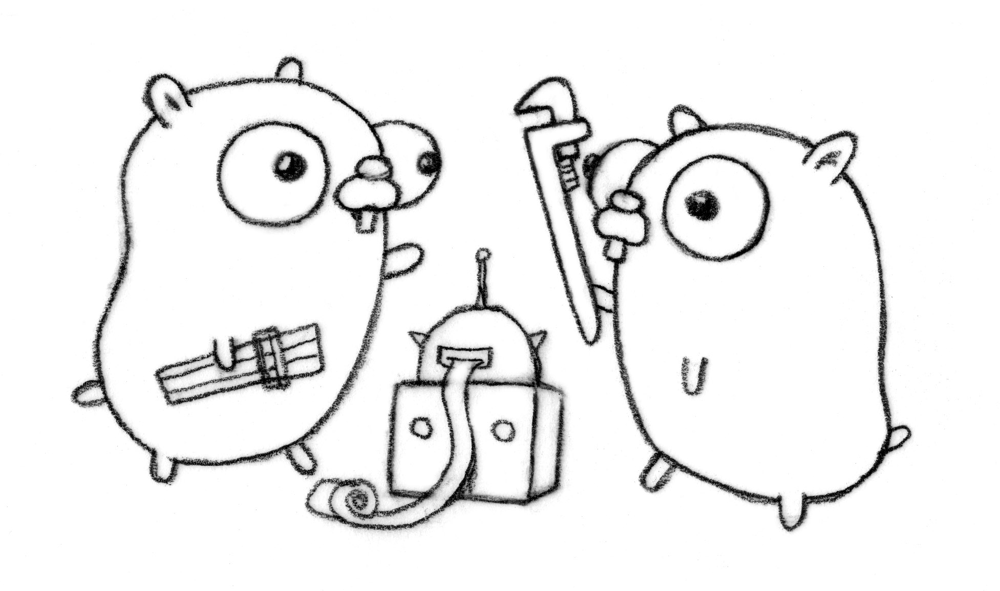

1.9 我要在棧上。不，你應該在堆上

我們在寫程式碼的時候，有時候會想這個變數到底分配到哪裡了？這時候可能會有人說，在棧上，在堆上。信我準沒錯...
但從結果上來講你還是一知半解，這可不行，萬一被人懵了呢。今天我們一起來深挖下 Go 在這塊的奧妙，自己動手豐衣足食
問題
type User struct {
ID int64
Name string
Avatar string
}
func GetUserInfo() *User {
return &User{ID: 13746731, Name: "EDDYCJY", Avatar: "https://avatars0.githubusercontent.com/u/13746731"}
}
func main() {
_ = GetUserInfo()
}
開局就是一把問號，帶著問題進行學習。請問 main 呼叫 GetUserInfo 後返回的 &User{...}。這個變數是分配到棧上了呢，還是分配到堆上了？
什麼是堆/棧
在這裡並不打算詳細介紹堆疊，僅簡單介紹本文所需的基礎知識。如下：
- 堆（Heap）：一般來講是人為手動進行管理，手動申請、分配、釋放。一般所涉及的記憶體大小並不定，一般會存放較大的物件。另外其分配相對慢，涉及到的指令動作也相對多
- 棧（Stack）：由編譯器進行管理，自動申請、分配、釋放。一般不會太大，我們常見的函式引數（不同平臺允許存放的數量不同），區域性變數等等都會存放在棧上
今天我們介紹的 Go 語言，它的堆疊分配是透過 Compiler 進行分析，GC 去管理的，而對其的分析選擇動作就是今天探討的重點
什麼是逃逸分析
在編譯程式最佳化理論中，逃逸分析是一種確定指標動態範圍的方法，簡單來說就是分析在程式的哪些地方可以訪問到該指標
通俗地講，逃逸分析就是確定一個變數要放堆上還是棧上，規則如下：
- 是否有在其他地方（非區域性）被引用。只要有可能被引用了，那麼它一定分配到堆上。否則分配到棧上
- 即使沒有被外部引用，但物件過大，無法存放在棧區上。依然有可能分配到堆上
對此你可以理解為，逃逸分析是編譯器用於決定變數分配到堆上還是棧上的一種行為
在什麼階段確立逃逸
在編譯階段確立逃逸，注意並不是在執行時
為什麼需要逃逸
這個問題我們可以反過來想，如果變數都分配到堆上了會出現什麼事情？例如：
- 垃圾回收（GC）的壓力不斷增大
- 申請、分配、回收記憶體的系統開銷增大（相對於棧）
- 動態分配產生一定量的記憶體碎片
其實總的來說，就是頻繁申請、分配堆記憶體是有一定 “代價” 的。會影響應用程式執行的效率，間接影響到整體系統。因此 “按需分配” 最大限度的靈活利用資源，才是正確的治理之道。這就是為什麼需要逃逸分析的原因，你覺得呢？
怎麼確定是否逃逸
第一，透過編譯器命令，就可以看到詳細的逃逸分析過程。而指令集 -gcflags 用於將標識引數傳遞給 Go 編譯器，涉及如下：
-m會打印出逃逸分析的最佳化策略，實際上最多總共可以用 4 個-m，但是資訊量較大，一般用 1 個就可以了-l會停用函式內聯，在這裡停用掉 inline 能更好的觀察逃逸情況，減少干擾
$ go build -gcflags '-m -l' main.go
第二，透過反編譯命令檢視
$ go tool compile -S main.go
注：可以透過 go tool compile -help 檢視所有允許傳遞給編譯器的標識引數
逃逸案例
案例一：指標
第一個案例是一開始丟擲的問題，現在你再看看，想想，如下：
type User struct {
ID int64
Name string
Avatar string
}
func GetUserInfo() *User {
return &User{ID: 13746731, Name: "EDDYCJY", Avatar: "https://avatars0.githubusercontent.com/u/13746731"}
}
func main() {
_ = GetUserInfo()
}
執行命令觀察一下，如下：
$ go build -gcflags '-m -l' main.go
# command-line-arguments
./main.go:10:54: &User literal escapes to heap
透過檢視分析結果，可得知 &User 逃到了堆裡，也就是分配到堆上了。這是不是有問題啊...再看看彙編程式碼確定一下，如下：
$ go tool compile -S main.go
"".GetUserInfo STEXT size=190 args=0x8 locals=0x18
0x0000 00000 (main.go:9) TEXT "".GetUserInfo(SB), $24-8
...
0x0028 00040 (main.go:10) MOVQ AX, (SP)
0x002c 00044 (main.go:10) CALL runtime.newobject(SB)
0x0031 00049 (main.go:10) PCDATA $2, $1
0x0031 00049 (main.go:10) MOVQ 8(SP), AX
0x0036 00054 (main.go:10) MOVQ $13746731, (AX)
0x003d 00061 (main.go:10) MOVQ $7, 16(AX)
0x0045 00069 (main.go:10) PCDATA $2, $-2
0x0045 00069 (main.go:10) PCDATA $0, $-2
0x0045 00069 (main.go:10) CMPL runtime.writeBarrier(SB), $0
0x004c 00076 (main.go:10) JNE 156
0x004e 00078 (main.go:10) LEAQ go.string."EDDYCJY"(SB), CX
...
我們將目光集中到 CALL 指令，發現其執行了 runtime.newobject 方法，也就是確實是分配到了堆上。這是為什麼呢？
分析結果
這是因為 GetUserInfo() 返回的是指標物件，引用被返回到了方法之外了。因此編譯器會把該物件分配到堆上，而不是棧上。否則方法結束之後，區域性變數就被回收了，豈不是翻車。所以最終分配到堆上是理所當然的
再想想
那你可能會想，那就是所有指標物件，都應該在堆上？並不。如下：
func main() {
str := new(string)
*str = "EDDYCJY"
}
你想想這個物件會分配到哪裡？如下：
$ go build -gcflags '-m -l' main.go
# command-line-arguments
./main.go:4:12: main new(string) does not escape
顯然，該物件分配到棧上了。很核心的一點就是它有沒有被作用域之外所引用，而這裡作用域仍然保留在 main 中，因此它沒有發生逃逸
案例二：未確定型別
func main() {
str := new(string)
*str = "EDDYCJY"
fmt.Println(str)
}
執行命令觀察一下，如下：
$ go build -gcflags '-m -l' main.go
# command-line-arguments
./main.go:9:13: str escapes to heap
./main.go:6:12: new(string) escapes to heap
./main.go:9:13: main ... argument does not escape
透過檢視分析結果，可得知 str 變數逃到了堆上，也就是該物件在堆上分配。但上個案例時它還在棧上，我們也就 fmt 輸出了它而已。這...到底發生了什麼事？
分析結果
相對案例一，案例二隻加了一行程式碼 fmt.Println(str)，問題肯定出在它身上。其原型：
func Println(a ...interface{}) (n int, err error)
透過對其分析，可得知當形參為 interface 型別時，在編譯階段編譯器無法確定其具體的型別。因此會產生逃逸，最終分配到堆上
如果你有興趣追原始碼的話，可以看下內部的 reflect.TypeOf(arg).Kind() 語句，其會造成堆逃逸，而表象就是 interface 型別會導致該物件分配到堆上
案例三、洩露引數
type User struct {
ID int64
Name string
Avatar string
}
func GetUserInfo(u *User) *User {
return u
}
func main() {
_ = GetUserInfo(&User{ID: 13746731, Name: "EDDYCJY", Avatar: "https://avatars0.githubusercontent.com/u/13746731"})
}
執行命令觀察一下，如下：
$ go build -gcflags '-m -l' main.go
# command-line-arguments
./main.go:9:18: leaking param: u to result ~r1 level=0
./main.go:14:63: main &User literal does not escape
我們注意到 leaking param 的表述，它說明了變數 u 是一個洩露引數。結合程式碼可得知其傳給 GetUserInfo 方法後，沒有做任何引用之類的涉及變數的動作，直接就把這個變數返回出去了。因此這個變數實際上並沒有逃逸，它的作用域還在 main() 之中，所以分配在棧上
再想想
那你再想想怎麼樣才能讓它分配到堆上？結合案例一，舉一反三。修改如下：
type User struct {
ID int64
Name string
Avatar string
}
func GetUserInfo(u User) *User {
return &u
}
func main() {
_ = GetUserInfo(User{ID: 13746731, Name: "EDDYCJY", Avatar: "https://avatars0.githubusercontent.com/u/13746731"})
}
執行命令觀察一下，如下：
$ go build -gcflags '-m -l' main.go
# command-line-arguments
./main.go:10:9: &u escapes to heap
./main.go:9:18: moved to heap: u
只要一小改，它就考慮會被外部所引用，因此妥妥的分配到堆上了
總結
在本文我給你介紹了逃逸分析的概念和規則，並列舉了一些例子加深理解。但實際肯定遠遠不止這些案例，你需要做到的是掌握方法，遇到再看就好了。除此之外你還需要注意：
- 靜態分配到棧上，效能一定比動態分配到堆上好
- 底層分配到堆，還是棧。實際上對你來說是透明的，不需要過度關心
- 每個 Go 版本的逃逸分析都會有所不同（會改變，會最佳化）
- 直接透過
go build -gcflags '-m -l'就可以看到逃逸分析的過程和結果 - 到處都用指標傳遞並不一定是最好的，要用對
之前就有想過要不要寫 “逃逸分析” 相關的文章，直到最近看到在夜讀裡有人問，還是有寫的必要。對於這塊的知識點。我的建議是適當瞭解，但沒必要硬記。靠基礎知識點加命令除錯觀察就好了。像是曹大之前講的 “你琢磨半天逃逸分析，一壓測，瓶頸在鎖上”，完全沒必要過度在意...